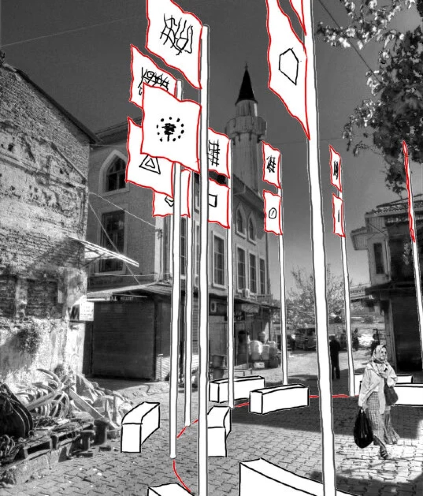

2012 · Installation, Public art / Kunst am Bau · Karaköy, Istanbul
Active Monument to Urban Destruction
Participatory public installation of sixteen hand-made six-metre flags with seating, each representing a space of urban destruction, during the 1st Istanbul Design Biennial.
- No.
- 1201
- Date/s
- 2012
- Type/s
- Installation, Public art / Kunst am Bau
- With
- CohStra, Kayıtdışı, Lucia Babina, Emiliano Gandolfi, Gabriela Rendón, Miguel Robles-Durán, Canan Erten, Elif Karaköse, Zeynep Çınar
- Place
- Karaköy, Istanbul
- Role
- participant with Kayıtdışı
- Status
- realised
- Links
- original ↗ · source ↗
